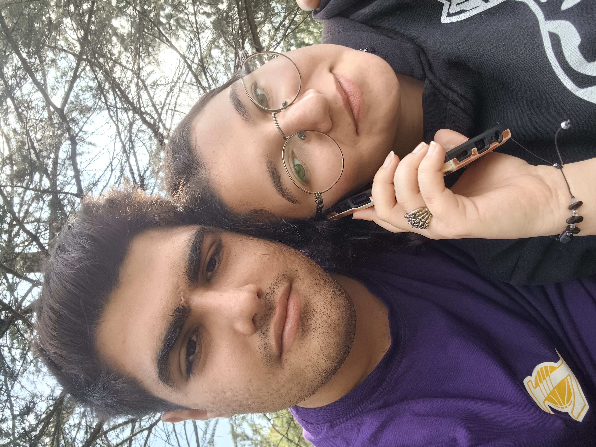
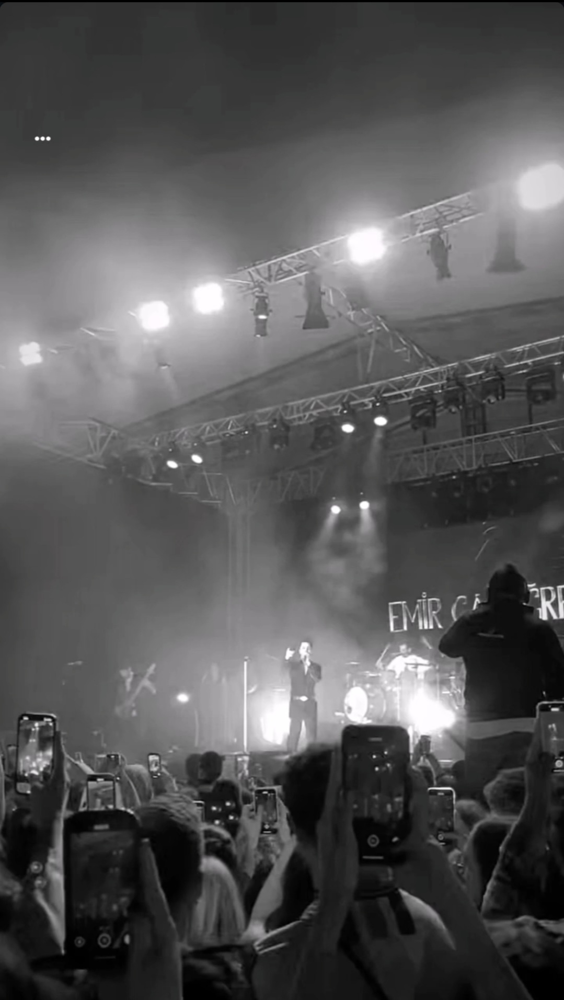

Tanıştığımız o ilk an, kalbime adını yazdığım gündü.
Depreme rağmen ilk sarılmamız, dünyam yerinden oynadı.
İlk kez aynı kitaplara baktık ama gözüm hep sende kaldı. Sessizlik arasında kalbimin en gür cümlesi sendin.
İlk kez okulundan aldım seni… O gün zaman bizden yana gibiydi. Saatlerce beraber güldük, gezdik, sustuk ama hep kalpten konuştuk.
O sabah kahvaltıyı millet bahçesinde yaptık ama en güzel manzara senin gülüşündü. Çay sıcaktı, sen sıcacık… Gönlüm o an tam anlamıyla huzurla doldu.
O gün ilk kez annenle ve kardeşinle tanıştım… Beraber yediğimiz lahmacunun tadı ayrıydı, çünkü ilk kez bir sofrada gerçekten “aileden biri†gibi hissettim.
Beraber gittiğimiz ilk konser… Kalbim sesinden çaldı.
Seninle ilk kez ayrı bir yere araba yolculuÄŸuna çıktık… Direksiyondaydım ama gözüm hep yan koltuktaki huzurdaydı. Yol uzundu belki ama seninle her anı sonsuz gibi güzeldi.
Ayağıma cam battı ama sen kalbime dokundun o gün.
Ailemle ilk yemeğimiz, gözlerin sofradaki en güzel şeydi.
Senin mezuniyetindi ama en büyük armağan bendim galiba 😊
Küçükkuyu’ya gittiğin gündü… Beni burada, olduğum yerde bıraktın. O an içimde bir boşluk oluştu ama sevgimde tek bir eksilme olmadı. Mesafeler aramıza girdi belki ama kalbimdeki yerin hep aynı kaldı. Bu gün, uzaklıkla sınanan bağımızı daha da güçlendirdi… Çünkü sen, hep aklımda ve kalbimde kalacaksın.
Yaptığım hataları düzeltmek için çıktığım yolda, sen beni affettin… Seni almadan Çorlu’ya dönmeyecektim. Bu dünyada senin için vazgeçemeyeceğim hiçbir şey yok. Artık seni kırdığım anları değil, seni mutlu ettiğim günleri çoğaltmak istiyorum. Sahilde seninle yüzdüğüm, bira içip saatlerce sohbet ettiğimiz o akşam, hem affedilmenin hem de gerçek sevginin anlamını kalbime kazıdı.